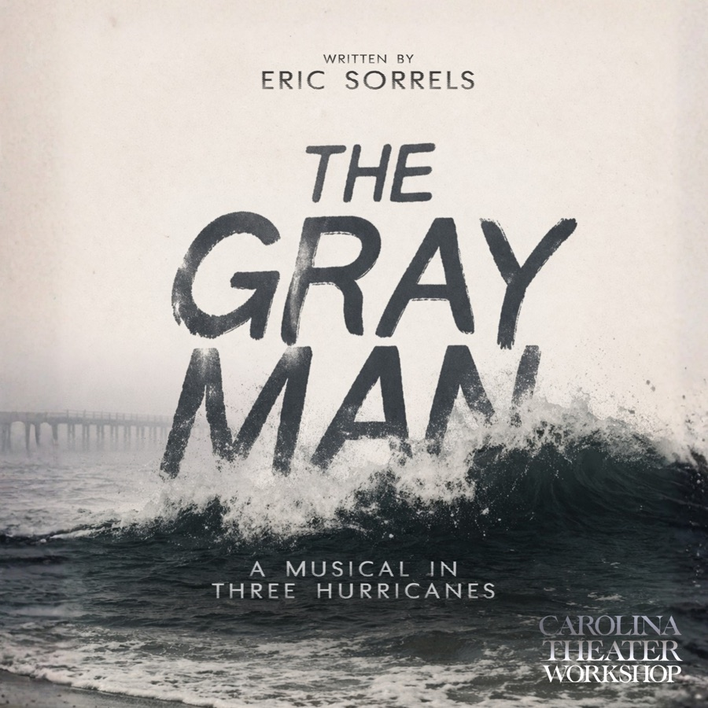
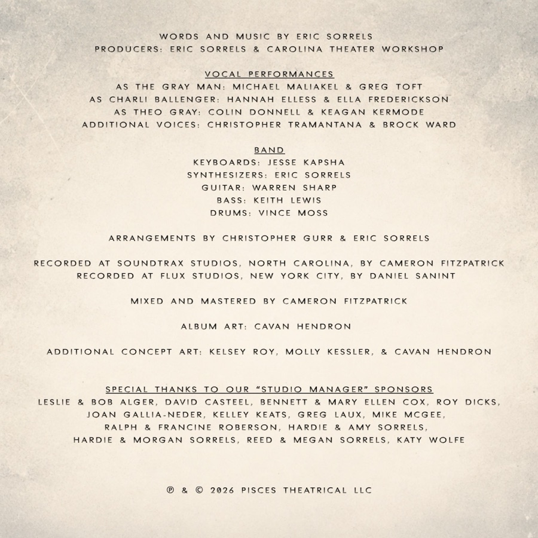

Early Digital Access
The Concept Album
Downloads


Early Digital Access
Enter the email address your access is under, and a six-digit code will be sent to it.
Thank you for supporting The Gray Man!
Enter the email you purchased with, and an access code will be sent to it.
If this email has access, a code is on its way. Check your spam folder, or email hello@ericsorrels.com for help.
Type the six digits here.
No invitation?
Purchase Full Digital AccessPress play on any track and its words appear here.
Press play on any track and its notes appear here.
Early Digital Access
Downloads

